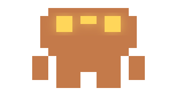
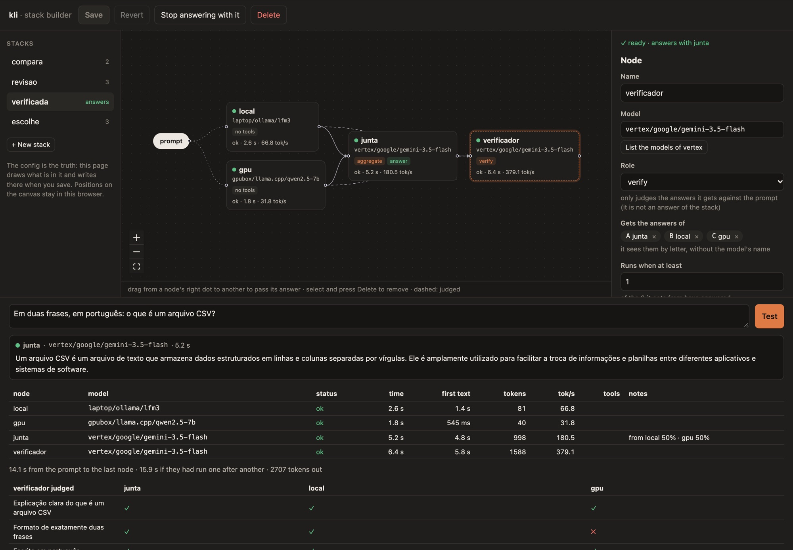
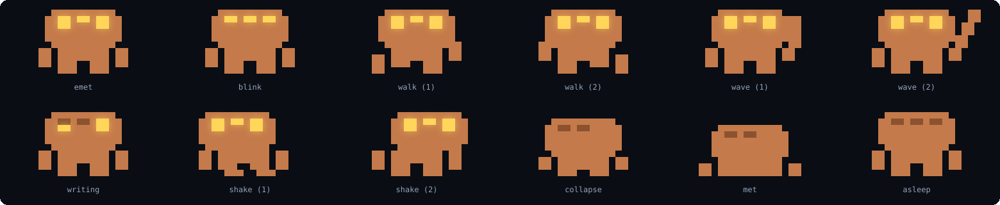

Kli é um harness de terminal em que você registra todas as suas fontes de inferência: servidores locais, outras máquinas por SSH, APIs e outros CLIs. Ele trabalha na sua pasta com as ferramentas do Claude Code, e uma model stack põe vários modelos para responder como um só, montada no navegador pelo /stackbuilder.

# o que vem pela entrada padrão vira contexto; a resposta sai no stdout $ git diff | kli "revise este patch e aponte riscos" No src/upload.ts, o leitor aberto na linha 42 não é liberado quando o parse falha: o return antecipado pula o releaseLock(). Ponha o laço num try/finally e libere o leitor no finally. # outro modelo só desta vez, sem mudar o padrão $ kli -m anthropic/claude-sonnet-5-5 "resuma" < CHANGELOG.md > resumo.md # uma stack responde; --json traz a resposta e as medidas para outro programa $ kli --stack compara --json "qual destes dois nomes é melhor?" | jq . # códigos de saída: 0 ok · 1 falha do provedor · 2 uso ou configuração · 130 interrompido
$ kli locations location / provider where default model credentials laptop this machine ollama server :11434 qwen3:14b ✓ no key claude cli claude sonnet ✓ claude's own login opencode cli opencode its default ✓ opencode's own login gpubox ssh gpubox llama.cpp server :8080 · ssh tunnel qwen2.5-7b ✓ no key claude cli claude haiku ✓ claude's login there vertex Google API · my-project · global gemini-3.5-flash-lite ✓ gcloud ADC (user) anthropic Anthropic API claude-sonnet-5-5 ✓ ANTHROPIC_API_KEY in ~/.kli/.env model laptop/ollama/qwen3:14b · fallback vertex # na sessão: /model abre os locais; com um nome, troca direto e vira o padrão › /model gpubox/llama.cpp/qwen2.5-7b
# na sessão, depois de /stack compara: a mesma pergunta para dois modelos ao mesmo tempo › em uma ou duas frases: quando usar Map em vez de objeto em JavaScript? ◆ stack compara · 4.4s · 2 of 2 nodes answered · 2400→319 tokens · $0.0003 · side by side saved 2.0s ├ ✓ local laptop/ollama/qwen3:14b · 4.3s · first token 0.6s · 1210→148 tokens · 40 tok/s └ ✓ api vertex/google/gemini-3.5-flash-lite · 2.1s · first token 0.8s · 1190→171 tokens · 132 tok/s · $0.0003 local · laptop/ollama/qwen3:14b │ api · vertex/google/gemini-3.5-flash-lite Use Map quando as chaves não são texto, │ Map aceita qualquer tipo como chave, guarda quando você adiciona e remove muito, ou │ a ordem, tem size e é mais rápido para quando a ordem de inserção importa. Para um │ inserir e remover com frequência. Objeto registro de campos fixos, um objeto basta. │ serve para dados com forma conhecida e vira │ JSON direto. local api status ✓ answered ✓ answered time 4.3s 2.1s first text 0.6s 0.8s tokens 1210→148 1190→171 tok/s 40 132 cost – $0.0003 tools none none steps 1 1
$ kli stats --days 7 Kli stats · last 7 days 14 sessions 61 prompts 441K tokens (402K in → 39K out) median 2.9s $0.41 reported ✓ 57 answered ↷ 3 fallbacks ✕ 2 failed ■ 2 interrupted Median latency by provider laptop/ollama ▄▄ 1.4s p90 4.2s · 24 answers · 1 failure gpubox/llama.cpp ▄▄▄ 1.9s p90 7.8s · 15 answers · 1 failure vertex ▄▄▄▄▖ 3.1s p90 5.2s · 11 answers anthropic ▄▄▄▄▄▄▄▄▄▄▖ 6.8s p90 9.9s · 4 answers laptop/claude ▄▄▄▄▄▄▄▄▄▄▄▄▄▄▄▄▄▄▄▄▄▄▄▄▄▄▄▄▄▄▄▄ 21s p90 34s · 3 answers Tokens by provider laptop/ollama ▄▄▄▄▄▄▄▄▄▄▄▄▄▄▄▄▄▄▄▄▄▄▄▄▄▄▄▄▄▄▄▄▄▄▄▄▄▄▄▄▄ 130K 118K in → 12K out laptop/claude ▄▄▄▄▄▄▄▄▄▄▄▄▄▄▄▄▄▄▄▄▄▄▄▄▄▄▄▄▄▄▄▄ 102K 97K in → 4.5K out gpubox/llama.cpp ▄▄▄▄▄▄▄▄▄▄▄▄▄▄▄▄▄▄▄▄▄▄▄▄▄ 79K 71K in → 8.1K out vertex ▄▄▄▄▄▄▄▄▄▄▄▄▄▄▄▄▄▄▄▄▄▄▄ 73K 64K in → 9.4K out · $0.06 anthropic ▄▄▄▄▄▄▄▄▄▄▄▄▄▄▄▄▄▖ 56K 52K in → 4.3K out · $0.35 Answers per day 17 █ ▁ █ █ █ ▃ █ █ ▇ █ █ █ █ █ █ ───────────── 10-25 10-31
O modelo pede e o Kli executa, nesta máquina, mesmo quando o modelo roda em outra. O laço segue até o modelo responder só com texto, e cada passo aparece na conversa e vai para o rastro.
● Bash(npm run build) ────────────────────────────────────────────────────────────────────── Run npm run build · Bash needs your permission $ npm run build Do you want to go ahead? ❯ 1. Yes 2. Yes, and don't ask again this session for npm run build commands 3. No, and tell Kli what to do differently (esc) ↑/↓ choose · Enter select · 1-3 jump · Esc back
Ler, procurar e listar dentro da pasta não pede nada, nem por comando (ls, cat, git diff). Write, Edit e Bash mostram a diferença ou o comando antes. Shift+Tab troca o modo: accept edits grava sem perguntar, e plan só lê.
Aprovar npm run build libera npm run build --watch, mas não npm publish. Cada parte de &&, | e ; precisa estar liberada, e o que pode esconder outro comando ($(…), crases, subshell) pergunta sempre.
Servidor de desenvolvimento, watcher, deploy longo: Ctrl+B manda para o segundo plano o comando que está rodando, e o modelo segue. Ele acompanha com BashOutput e para com KillBash; /jobs lista o que roda.
!comando: quem roda é você
O Kli entrega o terminal ao comando (senha, sudo, gcloud auth login, até vim) e volta quando ele termina. O que apareceu fica na conversa e vai para o modelo junto com a próxima mensagem.
O Kli lê as instruções que os outros agentes já leem, de ~/.kli até a pasta onde ele roda. A mais perto vale mais, e @caminho traz outro arquivo. O /status mostra quais entraram.
Escolha o Claude Code, o Antigravity, o OpenCode ou o Kimi Code como modelo. Ele trabalha na sua pasta com as ferramentas e as permissões dele, e cada passo aparece na conversa como os do Kli.
Cada modelo tem três níveis: onde roda, quem serve e qual é. laptop/ollama/qwen3:14b, gpubox/claude/haiku e anthropic/claude-sonnet-5-5 valem no /model, no kli -m e na reserva.
Ao incluir a máquina, o Kli procura o que roda nela: os servidores nas portas de sempre e os CLIs que ele conhece.
Um servidor que só escuta em localhost lá é alcançado por um túnel SSH que o Kli abre e fecha. Um CLI roda lá, com o login daquela máquina.
usuário@host ou um apelido do ~/.ssh/configssh -J)HTTP direto, sem SDK. As chaves ficam em ~/.kli/.env e aparecem na tela como ••••1234.
gcloud
Enter desce um nível e escolhe, e digitar filtra a lista. a, e e d incluem, editam e excluem locais e provedores, e Test manda "ok" antes de salvar. O escolhido vira o padrão; kli -m usa outro só uma vez.
O fallback é uma lista de modelos, tentada em ordem quando o modelo falha antes de responder. Cada troca aparece no rodapé e no rastro, e o golem balança a cabeça.
Uma stack é um grafo de modelos. O prompt vai ao mesmo tempo para os nós que não recebem de ninguém, e um nó com from espera esses e recebe as respostas deles. Os nós de que ninguém recebe são a resposta, e duas ficam lado a lado, para comparar. Um nó pode juntar, julgar ou escolher.
"stacks": { "compara": { "nodes": { "local": { "model": "laptop/ollama/lfm3" }, "gpu": { "model": "gpubox/llama.cpp/qwen2.5-7b" } } }, "verificada": { "nodes": { "local": { "model": "laptop/ollama/lfm3" }, "gpu": { "model": "gpubox/llama.cpp/qwen2.5-7b" }, "junta": { "model": "vertex/google/gemini-3.5-flash", "role": "aggregate", "from": ["local", "gpu"] }, "verificador": { "model": "vertex/google/gemini-3.5-flash", "role": "verify", "from": ["junta", "local", "gpu"] } } } }
# na sessão › /stack # escolhe uma stack, ou none › /stack compara # troca direto › /stack off # volta ao modelo › /stackbuilder # monta o grafo no navegador # uma vez só, no terminal $ kli --stack verificada "…" local e gpu rodam juntos; junta recebe as respostas como A e B, sem o nome do modelo; o verificador só julga.
aggregate)
Junta as respostas numa só e diz quanto veio de cada ramo (from local 50% · gpu 50%), num bloco que o Kli tira do texto antes de mostrar.
verify)Só julga. Lista os requisitos do pedido (conteúdo, formato, tamanho, língua) e marca cada um como cumprido, parcial ou faltando em cada resposta. A aderência sai das marcas, não de uma nota do modelo.
choose)
Uma das respostas vira a da stack, e a conversa segue dela. Quem escolhe vem em by, na ordem de tentar: o modelo do nó, você (na tela ou no navegador) ou um modelo de decisão, quando houver um treinado.
Por nó: tempo, primeiro texto, tokens, tokens por segundo, custo, passos e ferramentas. Tokens por segundo só quando a medida é honesta: um passo, sem ferramenta. Na stack, o tempo de parede e quanto rodar lado a lado economizou.
Por padrão os nós só leem (as ferramentas de leitura do Kli, ou o CLI em modo plan), então nós rodando juntos nunca param para perguntar. Com "tools": "write", cada nó programa na sua cópia da pasta (um git worktree), os testes rodam em cada cópia, quem julga recebe os diffs, e você escolhe qual aplicar (abaixo).
O fallback geral não vale numa stack: se outro modelo respondesse por um nó, a comparação mentiria. Cada nó pode ter o seu, e a tela mostra quem respondeu de fato.
Na pergunta seguinte, cada nó continua do que ele mesmo disse. Esc para todos os nós, e o que já tinha chegado fica, marcado como interrompido.
Cada evento leva a stack e o nó, e kli sessions <id> mostra [nó] em cada linha. No kli stats, a pergunta conta uma vez e cada resposta conta para o modelo que respondeu.
Na tela cheia, a árvore dos nós se preenche enquanto eles trabalham, e as respostas chegam lado a lado. No kli -p, cada nó aparece no stderr e as respostas vão para o stdout; --json traz tudo.
Com "tools": "write", cada nó programa numa cópia da sua pasta, só dele. O Kli prepara cada cópia, roda os testes do projeto em cada uma, passa os diffs para quem julga e, no fim, pergunta qual aplicar. Nada chega à sua pasta sem você escolher.
"programa": { "nodes": { "opus": { "model": "laptop/claude/opus", "tools": "write" }, "gemini": { "model": "vertex/google/gemini-3.5-flash", "tools": "write" }, "agy": { "model": "laptop/agy", "tools": "write" }, "juiz": { "model": "vertex/google/gemini-3.5-flash", "role": "verify", "from": ["opus", "gemini", "agy"] } } } a stack não diz como instalar nem como testar: isso é do projeto, e o Kli descobre sozinho.
# 1. o projeto declara, se quiser: .kli/write.json { "check": "make test", "run": ["make test"], "fence": { "network": true } } # 2. senão, o "write" da stack (uma stack de um projeto só) # 3. senão, os arquivos do projeto bun.lock → bun install · bun run test package-lock.json → npm ci · npm test go.mod → go mod download · go test ./... Cargo.toml → cargo fetch · cargo test uv.lock → uv sync · uv run pytest App.slnx → dotnet restore · dotnet test (e pnpm, yarn e requirements.txt; sem nada na raiz, as pastas logo abaixo: backend/, frontend/)
› O teste em soma.test.ts falha. Corrija. ◆ stack programa · 41.5s · 4 of 4 nodes answered · 141574→3525 tokens · $0.17 · side by side saved 22.3s ├ ✓ opus laptop/claude/opus · 11.4s · 110633→706 tokens · $0.17 · 4 tools · 1 file +1 −1 · check passed ├ ✓ gemini vertex/google/gemini-3.5-flash · 11.2s · 10916→453 tokens · 6 tools (1 failed) · 1 file +1 −1 · check passed ├ ✓ agy laptop/agy · 37.4s · 18125→1557 tokens · 4 tools · 1 file +1 −1 · check passed └ ✓ juiz vertex/google/gemini-3.5-flash · 3.8s · adherence opus 100 · gemini 100 · agy 100 … as três respostas lado a lado e a tabela de medidas, com as linhas changes e check … ◇ adherence to the request · judged by juiz opus gemini agy 1. Corrigir a função soma para o teste passar ✓ ✓ ✓ 2. Responder em português ✓ ✓ ✓ 3. the project's check passes (bun test) ✓ ✓ ✓ adherence 100/100 100/100 100/100 ✎ opus · laptop/claude/opus · 1 file +1 −1 · check passed soma.ts +1 −1 set up with bun install · checked with bun test · from bun.lock fenced by sandbox-exec: writes only in its copy, no network … o mesmo para gemini e agy, com o caminho de cada diff … Apply which changes to your folder? the copies start again from your folder on the next prompt · Esc: none, each node goes on in its copy ❯ 1. opus · laptop/claude/opus 1 file +1 −1 · check passed · adherence 100 2. gemini · vertex/google/gemini-3.5-flash 1 file +1 −1 · check passed · adherence 100 3. agy · laptop/agy 1 file +1 −1 · check passed · adherence 100 4. none your folder stays as it is
Uma execução real, num projeto com uma função que subtraía em vez de somar: o Kli achou o bun.lock, preparou cada cópia com bun install e rodou o bun test em cada uma. Os três corrigiram, a checagem passou nas três (cada uma dentro da cerca), e o juiz julgou só o pedido: ele não recebe as instruções do Kli, que antes viravam requisito ("ser direto e conciso").
Um git worktree que parte da pasta como você a vê: o último commit, o que você mudou e não comitou, e os arquivos novos. A cópia dura a conversa, então na pergunta seguinte o nó segue do que fez.
Quando o nó termina, o Kli mede o diff e, se ele mudou arquivos, roda a checagem do projeto na cópia (Rust, Go, .NET, npm, Python…). Quem julga recebe os diffs e se os testes passaram; no verificador, "os testes passam" vira um requisito marcado pelo Kli, não pelo modelo. Um nó que estourou o tempo guarda o que fez.
O primeiro da lista é o escolhido por um nó choose, ou o de maior aderência. Aplicar muda só os arquivos, tudo ou nada, e as cópias recomeçam da sua pasta. No kli -p nada é aplicado: cada diff fica guardado para um git apply.
Como instalar e testar vem do .kli/write.json do projeto ou dos arquivos dele (também nas pastas logo abaixo: um backend em .NET e um frontend em npm), e a tela diz de onde veio. Sem nada encontrado, os nós programam sem setup nem checagem, e a tela avisa. Você não configura nada por projeto.
O laço do próprio Kli, com qualquer modelo que use ferramentas, e o Claude Code, o OpenCode, o Kimi Code e o Antigravity: cada CLI trabalha como agente dentro da sua cópia, com as ferramentas dele. Os cinco foram testados no mesmo bug (o laço do Kli com o Gemini).
Os comandos do nó e a checagem rodam no sandbox-exec (macOS) ou no bwrap (Linux): gravam só na cópia e nos caches, não leem as suas chaves e não saem para a rede. Uma lista de comandos não bastava: num teste, um modelo rodou o bun install recusado por um preload do bun test. Cada recusa aparece na linha do nó.
/stackbuilder na sessão, ou kli stackbuilder no terminal, abre uma página servida pelo próprio kli e embutida no binário. A configuração continua sendo a verdade: a página desenha o que está nela e grava lá quando você salva.

verificada: o lfm3 do laptop e o qwen2.5-7b da GPU responderam em 2,6 s e 1,8 s, o Gemini juntou as duas meio a meio, e o verificador deu 100% à resposta final e 67% ao modelo que passou das duas frases pedidas.
Puxe do ponto da direita de um nó para passar a resposta a outro; Delete tira um nó ou uma ligação. Uma ligação que fecharia um círculo é recusada com o motivo, e Arrange volta às colunas.
Modelo (com a lista que o provedor tem), papel, quem escolhe, de quem recebe, mínimo de entradas, ferramentas (ler ou gravar), reserva e instruções. Os problemas aparecem enquanto você edita, e com eles não se salva.
Um prompt roda a stack como está na tela. Os nós acendem enquanto trabalham, com a ferramenta que estão usando, e chegam as respostas, as medidas, as contribuições e o veredito. A escolha pela pessoa é feita ali mesmo.
A página escuta em 127.0.0.1, e cada chamada leva o token do endereço que o kli abriu: outra página do navegador não chega à sua configuração. A sessão aberta acompanha o que você salva.
Fizemos uma busca ampla: nenhuma TUI faz o conjunto que o Kli propõe. Cada pedaço existe, espalhado por ferramentas diferentes, e várias delas nem são de terminal. O Kli junta tudo, com as fontes que você já tem.
llm-consortium (plugin do llm, de Simon Willison): modelos em paralelo, um árbitro junta e repete até um limiar de confiança. llm-council, de Andrej Karpathy (web): respostas lado a lado, revisão anônima em que cada modelo ranqueia os outros, e um "presidente" que junta. multi-llm-consensus (biblioteca Python).
Falta: grafo (o fluxo é fixo), verificador com requisitos e ferramentas na pasta.
Orch e Neurones comparam e juntam o Claude Code, o Codex e o Gemini CLI; cli-agents monta um conselho em painel ou debate; oh-my-claude-sisyphus deixa o Claude juntar o Codex e o Gemini.
Falta: servidores locais, máquinas por SSH, APIs e medidas.
Claude Squad (TUI: Claude Code, Codex, Gemini e Aider, cada um num worktree e numa branch), amux, Vibe Kanban e outros.
Falta: comparar, julgar e juntar o que cada agente fez.
Langflow, n8n (tem até um fluxo de "conselho" de modelos), Dify, Rivet (editor de nós para desktop) e Flowise.
Falta: são plataformas web ou desktop, não um harness de terminal na sua pasta; não usam outros CLIs como modelos.
promptfoo: compara provedores lado a lado, com modelos como juízes e métricas de busca (context-relevance, context-recall).
Falta: é avaliação em lote, fora da conversa e sem grafo de agentes.
aichat: mais de 20 provedores, RAG em documentos locais, agentes e sessões.
Falta: um modelo por vez, sem grafo e sem comparação.
O Claude Code, o Antigravity, o OpenCode e o Kimi Code entram como modelos, ao lado dos servidores locais, das máquinas por SSH e das APIs. Num nó de stack, cada um trabalha com as próprias ferramentas.
Ramos em paralelo, agregador, verificador e escolha, com agentes que leem a sua pasta ou programam, cada um na sua cópia, com os testes rodados em cada uma: o que uma ferramenta de comparação faz, mas dentro da conversa.
Primeiro texto, tokens por segundo sem o raciocínio, custo, quem respondeu de fato e a aderência ao pedido, por nó, no rastro e no kli stats.
MCP, retomar uma sessão, resumir o contexto quando a conversa cresce, imagens e sandbox do sistema. Nisso o Claude Code, o Codex e o OpenCode vão à frente, e o Kli os usa como peças.
Repetir até a resposta passar de um limiar, e rodar várias instâncias do mesmo modelo para ver a variação. Do llm-consortium.
Cada modelo ranqueia os outros antes da síntese. E um alerta para o verificador e a escolha: modelos tendem a preferir respostas longas e vagas. Do llm-council.
Context-relevance e context-recall para o balizamento: separar a falha da busca da falha do modelo. Do promptfoo.
Já trouxemos: cada ramo que grava trabalha no seu worktree, e o Kli compara, julga e aplica o que cada um fez. Do Claude Squad.
Pesquisa feita em 01/11/2026 em ferramentas de terminal, orquestradores de CLIs, construtores visuais e ferramentas de avaliação. Não é exaustiva, e essa área muda toda semana: os nomes e a situação de cada projeto podem ter mudado.
O desenho combinado para as próximas fatias, ainda sem código. É daqui que sai o que vai ser escrito; a ordem e os detalhes ainda podem mudar.
Um card ground traz contexto de fontes de dados e entrega a etapa seguinte balizada. Ele entra antes de um ramo, depois de um rascunho, antes do agregador ou do verificador, e cada ramo pode ter os seus, com fontes diferentes em momentos diferentes. A base já roda: o card, os dois modos e a fonte de arquivos locais (Markdown, texto, CSV, JSON); as outras fontes vêm uma por vez.
◈ ground · enrich acrescenta (o modelo usa quando ajuda e cita) · restrict limita (só o contexto, e diz quando falta) · "resposta": a busca sai do rascunho anterior, não do pedido
// cada fonte de dados é um adaptador com a mesma forma export interface DataSource { readonly type: "files" | "sql" | "qdrant" | "weaviate" | "ragnarock" | "gdrive"; search(query: string, options: { top: number; signal?: AbortSignal }): Promise<Passage[]>; } // o que o ground recebe de qualquer fonte export interface Passage { title: string; // "Política de Reembolso" ref: string; // "gdrive:politicas" link?: string; // para a citação text: string; score?: number; modified?: string; }
<request>quanto vendemos de Grace em outubro?</request> <answer from="A">…o rascunho que chegou ao ground…</answer> <context> [1] sql:vendas · 3 linhas | produto | mês | qtd | … [2] gdrive:politicas · Política de Reembolso (Docs) · alterado em 28/10 · drive.google.com/… </context> <rules>Responda só com o contexto e cite [n]. Se não estiver lá, diga.</rules> # por dentro: consulta → busca nas fontes (em paralelo) # → regras → orçamento de tokens → pacote
"sources": { "politicas": { "type": "gdrive", "folder": "https://drive.google.com/drive/folders/…" }, "docs": { "type": "qdrant", "url": "http://localhost:6333", "embed": "laptop/ollama/bge-m3" }, "vendas": { "type": "sql", "urlEnv": "VENDAS_DB", "query": "select … where produto ilike :termo" } }, "fatos": { "role": "ground", "from": ["local"], "sources": ["vendas", "politicas"], "mode": "restrict", "query": "answers", "budget": 2000 }
.md, .txt, .csv, .json; depois .xlsx e .pdf. O Kli recorta os trechos.
PostgreSQL, MySQL e SQLite, com o cliente que vem no Bun. Consultas fixas e só leitura.
Qdrant e Weaviate por HTTP, com o embedding vindo de um modelo dos seus locais.
Um RAG com API própria, pela rota de busca dele; ou por MCP, quando o Kli tiver.
Uma pasta, com o login OAuth do próprio usuário (só leitura) e a busca do próprio Drive.
Cada ramo da stack trabalha numa cópia da pasta (um git worktree), com os comandos que a stack libera e a checagem do projeto (os testes) em cada cópia. Quem julga recebe os diffs, e você escolhe qual aplicar.
O papel ground, a forma comum das fontes, a fonte de arquivos locais, os modos enrich e restrict, a consulta, as regras, o orçamento de tokens, o rastro, o card no builder e a prévia do que foi injetado. Em restrict, o modelo diz quando a resposta não está no contexto.
Google Drive, Qdrant e Weaviate, RAGnaRock, SQL, e o Excel e o PDF nos arquivos, cada uma numa fatia, na ordem que for decidida. Depois, o modelo opcional no card, para extrair os termos de busca e resumir.
Os comandos e a checagem de cada ramo numa caixa do sistema (sandbox-exec no macOS, bwrap no Linux), gravando só na cópia e sem rede, e as recusas contadas na linha do nó.
Uma lista fixa de critérios no nó verify, julgados antes dos que ele tira do pedido, editável no builder; e o juiz sem as instruções do Kli.
O que fazer quando a conversa cresce além do contexto, retomar uma sessão e o MCP nas ferramentas.
TypeScript no Bun, sem SDK e sem framework de agente: o laço e a tela são do próprio Kli.
bun build --compile gera o dist/kli, com a página do /stackbuilder embutida. React e React Flow servem só a essa página; o resto do Kli não tem dependência.
Cada provedor fala o próprio protocolo por HTTP, com streaming: compatível com OpenAI, Gemini no Vertex e Messages da Anthropic. O núcleo traduz o jeito de cada um pedir ferramentas.
cat log.txt | kli "resuma" ou git diff | kli "revise": o que vem pela entrada padrão vira contexto, e a resposta sai no stdout, com códigos de saída para scripts.
Cada pergunta, resposta e ferramenta vai para o histórico de rolagem do próprio terminal, como no Claude Code. Rolar para cima chega ao começo da sessão, e a conversa continua lá quando você sai.
Cada sessão vira um JSONL com pedidos, respostas, falhas, reservas, ferramentas e !comandos, com provedor, modelo, tempo e tokens. kli stats desenha desfechos, latência e tokens por provedor e respostas por dia.
As chaves vão para ~/.kli/.env, só do dono. A configuração guarda o nome da variável, a tela mostra ••••1234, e a chave não vai para o rastro nem para os CLIs.
Na tradição cabalística, o kli é o vaso receptor de luz e o golem é modelado em barro cru. No terminal, ele ganha vida em uma matriz de 20×10 pixels para refletir o estado do modelo em tempo real.
Representação vetorial exata da matriz 20×10 pixels original do Kli em SVG e PNG de alta resolução.

Baixe o binário, deixe o kli init achar as suas fontes e compare dois modelos lado a lado.
Do código: git clone https://github.com/pacmanalx/kli.git && cd kli && bun install && bun run build